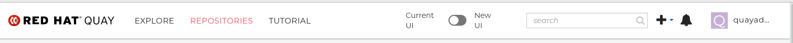

Early access documentation for Red Hat Quay
Red Hat Quay Early Access Documentation
Abstract
- Preface
- 1. Red Hat Quay 3.8 Release Notes
- 2. Configuration updates for Quay 3.8
- 3. Testing 3.8.0 features
- 3.1. Enabling and testing the IPv6 and dual-stack protocol family on standalone Red Hat Quay deployments
- 3.2. Enabling LDAD superusers for Red Hat Quay
- 3.3. Enabling and testing
FEATURE_SUPERUSERS_FULL_ACCESS - 3.4. Enabling and testing
FEATURE_RESTRICTED_USERS - 3.5. Enabling and testing
RESTRICTED_USER_READ_ONLY - 3.6. Enabling and testing
RESTRICTED_USERS_WHITELIST - 3.7. Enabling and testing
FEATURE_UI_V2- 3.7.1. Creating a new organization in the Red Hat Quay 3.8 beta UI
- 3.7.2. Deleting an organization using the Red Hat Quay 3.8 beta UI
- 3.7.3. Creating a new repository using the Red Hat Quay 3.8 beta UI
- 3.7.4. Deleting a repository using the Red Hat Quay 3.8 beta UI
- 3.7.5. Pushing an image to the Red Hat Quay 3.8 beta UI
- 3.7.6. Deleting an image using the Red Hat Quay 3.8 beta UI
- 3.8. Enabling the Red Hat Quay legacy UI
- 3.9. Leveraging storage quota limits
Preface
Chapter 1. Red Hat Quay 3.8 Release Notes
Red Hat Quay is regularly released, containing new features, bug fixes, and software updates. Deploy the latest version of Red Hat Quay to ensure you are using the latest features, bug fixes, and software updates.
For Red Hat Quay documentation:
- Documentation is versioned along with each major release
- The latest Red Hat Quay documentation is available from the Red Hat Quay Documentation page
- Prior to version 2.9.2, the product was referred to as Quay Enterprise
1.1. Version 3.8.0
1.1.1. Red Hat Quay, Clair, and Quay Builder
The following updates have been made to Red Hat Quay, Clair, and Quay Builders:
Previously, Red Hat Quay only supported the IPv4 protocol family. IPv6 support is now available in Red Hat Quay 3.8 standalone deployments. Additionally, dual stack (IPv4/IPv6) support is available.
Table 1.1. Network protocol support
Protocol family Red Hat Quay 3.7 Red Hat Quay 3.8 IPv4
✓
✓
IPv6
✓
Dual stack (IPv4/IPv6)
✓
For more information, see PROJQUAY-272.
Previously, Red Hat Quay did not require self-signed certificates to use Subject Alternative Names (SANs). Red Hat Quay users could temporarily enable Common Name matching with
GODEBUG=x509ignoreCN=0to bypass the required certificate.With Red Hat Quay 3.8, Red Hat Quay has been upgraded to use Go version 1.17. As a result, setting
GODEBUG=x509ignoreCN=0no longer works. Users must include self-signed certificates to use SAN.For more information, see PROJQUAY-1605.
Previously, if a superuser tried to obtain a list of repositories in a namespace that they were not a member of, the list would return nothing. For example:
$ GET /api/v1/repository/{repository}Example output:
$ []
With this update, when
FEATURE_SUPERUSERS_FULL_ACCESSis configured,$ GET /api/vi/repository?namespace={enter_namespace}returns the repository names:Example output:
$ [{name:"repo1",...},{name:"repo2",...}]The following configuration fields have been added to enhance the Red Hat Quay registry:
FEATURE_LISTEN_IP_VERSION: This configuration field allows users to set the protocol family to IPv4, IPv6, or dual-stack. This configuration field might be properly set, otherwise Red Hat Quay fails to start.
Default:
IPv4Additional configurations:
IPv6,dual-stackTo test this feature, see IPv6 Support.
The following enhancements have been made to the Red Hat Quay proxy cache feature:
Previously, the cache of a proxy organization with quota management enabled could reach full capacity. As a result, pulls for new images could be prevented until an administrator cleaned up the cached images.
With this update, Red Hat Quay administrators can now use the storage quota of an organization to limit the cache size. Limiting the cache size ensures that backend storage consumption remains predictable by discarding images from the cache according to the pull frequence or overall usage of an image. As a result, the storage size allotted by quota management always stays within its limits.
For more information, see Leveraging storage quote limits.
The following configuration fields have been added to enhance the superuser role:
LDAP_SUPERUSER_FILTER: This configuration field is a subset of the
LDAP_USER_FILTERconfiguration field. It allows Red Hat Quay administrators the ability to configure Lightweight Directory Access Protocol (LDAP) users as superusers when Red Hat Quay uses LDAP as its authentication provider.With this field, administrators can add or remove superusers without having to update the Red Hat Quay configuration file and restart their deployment.
To test this feature, see Enabling LDAP superusers for Red Hat Quay.
- FEATURE_SUPERUSERS_FULL_ACCESS: This configuration field grants superusers the ability to read, write, and delete content from other repositories in namespaces that they do not own or have explicit permissions for.
The following configuration fields have been added for user permissions:
- FEATURE_RESTRICTED_USERS: This configuration field restricts normal users from reading and writing content and creating organizations.
-
RESTRICTED_USERS_WHITELIST: With this configuration field enabled, administrators can exclude users from the
FEATURE_RESTRICTED_USERSsetting. -
RESTRICTED_USER_READ_ONLY: When set, restrict users to read-only operations unless otherwise specified in
RESTRICTED_USERS_WHITELIST.
The following configuration field has been added to test Red Hat Quay’s new user interface:
FEATURE_UI_V2: With this configuration field, users can test the beta UI environment.
Default:
trueTo test this feature, see Enabling and testing FEATURE_UI_V2.
IPv6 limitations:
Currently, attempting to configure your Red Hat Quay deployment with the common Azure Blob Storage configuration will not work on IPv6 single stack environments. Because the endpoint of Azure Blob Storage does not support IPv6, there is no workaround in place for this issue.
For more information, see PROJQUAY-4433.
Currently, attempting to configure your Red Hat Quay deployment with Amazon S3 CloudFront will not work on IPv6 single stack environments. Because the endpoint of Amazon S3 CloudFront does not support IPv6, there is no workaround in place for this issue.
For more information, see PROJQUAY-4470.
- Currently, OpenShift Data Foundations (ODF) is unsupported when Red Hat Quay is deployed on IPv6 single stack environments. As a result, ODF cannot be used in IPv6 environments. This limitation is scheduled to be fixed in a future version of OpenShift Data Foundations.
- Currently, dual stack support does not work on Red Hat Quay OpenShift Container Platform deployments. When Red Hat Quay 3.8 is deployed on OpenShift Container Platform with dual-stack (IPv4 and IPv6) support enabled, the Quay Route generated by the Red Hat Quay Operator only generates an IPv4 address, and not an IPv6 address. As a result, clients with an IPv6 address cannot access the Red Hat Quay application on OpenShift Container Platform. This limitation is scheduled to be fixed in a future version of OpenShift Container Platform.
Known issues:
The
metadata_jsoncolumn in thelogentry3table on MySQL deployments has a limited size ofTEXT. Currently, the default size of the column set to beTEXTis 65535 bytes. 65535 bytes is not big enough for some mirror logs when debugging is turnedoff. When a statement containingTEXTlarger than 65535 bytes is sent to MySQL, the data sent is truncated to fit into the 65535 boundary. Consequently, this creates issues when themetadata_jsonobject is decoded, and the decode fails because the string is not terminated properly. As a result, Red Hat Quay returns a 500 error.There is currently no workaround for this issue, and it will be addressed in a future version of Red Hat Quay. For more information, see PROJQUAY-4305.
1.1.2. Red Hat Quay feature tracker
New features have been added to Red Hat Quay, some of which are currently in Technology Preview. Technology Preview features are experimental features and are not intended for production use.
Some features available in previous releases have been deprecated or removed. Deprecated functionality is still included in Red Hat Quay, but is planned for removal in a future release and is not recommended for new deployments. For the most recent list of deprecated and removed functionality in Red Hat Quay, refer to Table 1.1. Additional details for more fine-grained functionality that has been deprecated and removed are listed after the table.
Table 1.2. Technology Preview tracker
| Feature | Quay 3.8 | Quay 3.7 | Quay 3.6 |
|---|---|---|---|
|
Technology Preview |
- |
- | |
|
General Availability |
- |
- | |
|
General Availability |
- |
- | |
|
General Availability |
- |
- | |
|
General Availability |
- |
- | |
|
General Availability |
- |
- | |
|
General Availability |
- |
- | |
|
General Availability |
- |
- | |
|
General Availability |
General Availability |
- | |
|
General Availability |
General Availability |
- | |
|
General Availability |
Technology Preview |
- | |
|
General Availability |
General Availability |
- | |
|
General Availability |
General Availability |
- | |
|
Support for Microsoft Azure Government (MAG) |
General Availability |
General Availability |
- |
|
Deprecated |
Deprecated |
Deprecated | |
|
Deprecated |
Deprecated |
Deprecated | |
|
General Availability |
General Availability |
General Availability | |
|
Technology Preview |
Technology Preview |
Technology Preview |
Chapter 2. Configuration updates for Quay 3.8
2.1. New configuration fields
The following configuration fields have been introduced with Red Hat Quay 3.8:
| Field | Type | Description |
|---|---|---|
|
FEATURE_UI_V2 |
Boolean |
When set, allows users to try the beta UI environment.
Default: |
|
FEATURE_LISTEN_IP_VERSION |
String |
Enables IPv4, IPv6, or dual-stack protocol family. This configuration field must be properly set, otherwise Red Hat Quay fails to start.
Default:
Additional configurations: |
|
LDAP_SUPERUSER_FILTER |
String |
Subset of the With this field, administrators can add or remove superusers without having to update the Red Hat Quay configuration file and restart their deployment. |
|
FEATURE_SUPERUSERS_FULL_ACCESS |
Boolean |
Grants superusers the ability to read, write, and delete content from other repositories in namespaces that they do not own or have explicit permissions for.
Default: |
|
FEATURE_RESTRICTED_USERS |
Boolean |
Restricts normal users from reading and writing content and creating organizations.
Default: |
|
RESTRICTED_USERS_WHITELIST |
String |
When set, specific users can be excluded from the |
|
RESTRICTED_USER_READ_ONLY |
Boolean |
When set, restrict users to read-only operations unless otherwise specified in
Default: |
Chapter 3. Testing 3.8.0 features
The following sections in this guide explain how to enable new features and test that they are working.
3.1. Enabling and testing the IPv6 and dual-stack protocol family on standalone Red Hat Quay deployments
Your Red Hat Quay deployment can now be served in locations that only support IPv6, such as Telco and Edge environments. Support is also offered for dual-stack networking so your Red Hat Quay deployment can listen on IPv4 and IPv6 simultaneously.
3.1.1. Enabling and testing IPv6
Use the following procedure to enable IPv6 on your standalone Red Hat Quay deployment.
Prerequisites
- You have updated Red Hat Quay to 3.8.
- Your host and container software platform (Docker, Podman) must be configured to support IPv6.
Procedure
In your deployment’s
config.yamlfile, add theFEATURE_LISTEN_IP_VERSIONparameter and set it toIPv6, for example:--- FEATURE_GOOGLE_LOGIN: false FEATURE_INVITE_ONLY_USER_CREATION: false FEATURE_LISTEN_IP_VERSION: IPv6 FEATURE_MAILING: false FEATURE_NONSUPERUSER_TEAM_SYNCING_SETUP: false ---
- Start, or restart, your Red Hat Quay deployment.
Check that your deployment is listening to IPv6.
For a standalone deployment, enter the following command:
$ curl <quay_endpoint>/health/instance {"data":{"services":{"auth":true,"database":true,"disk_space":true,"registry_gunicorn":true,"service_key":true,"web_gunicorn":true}},"status_code":200}For an Operator based deployment, enter the following command:
$ curl <quay_endpoint>/health/instance {"data":{"services":{"auth":true,"database":true,"disk_space":true,"registry_gunicorn":true,"service_key":true,"web_gunicorn":true}},"status_code":200}
3.1.1.1. Expected Results
After enabling IPv6 in your deployment’s config.yaml, all Red Hat Quay features can be used as normal, so long as your environment is configured to use IPv6 and is not hindered by the current limitations.
If your environment is configured to IPv4, but the FEATURE_LISTEN_IP_VERSION configuration field is set to IPv6, Red Hat Quay will fail to deploy.
You can use the following procedure to test that your Red Hat Quay deployment can push and pull images in an IPv6 environment.
Procedure
Pull a sample image from an external registry:
$ podman pull busybox
Tag the image:
$ podman tag docker.io/library/busybox quay-server.example.com/quayadmin/busybox:test
Push the image to your Red Hat Quay registry:
$ podman push --tls-verify=false quay-server.example.com/quayadmin/busybox:test
Test access to the image from the CLI by deleting your local copy of the image:
$ podman rmi quay-server.example.com/quayadmin/busybox:test
Pull the image from your Red Hat Quay registry:
$ podman pull --tls-verify=false quay-server.example.com/quayadmin/busybox:test
3.1.2. Enabling and testing dual-stack
Prerequisites
- You have updated Red Hat Quay to 3.8.
- Your host and container software platform (Docker, Podman) must be configured to support IPv6.
Procedure
In your deployment’s
config.yamlfile, add theFEATURE_LISTEN_IP_VERSIONparameter and set it todual-stack, for example:--- FEATURE_GOOGLE_LOGIN: false FEATURE_INVITE_ONLY_USER_CREATION: false FEATURE_LISTEN_IP_VERSION: dual-stack FEATURE_MAILING: false FEATURE_NONSUPERUSER_TEAM_SYNCING_SETUP: false ---
- Start, or restart, your Red Hat Quay deployment.
Check that your deployment is listening to both channels by entering the following command:
For IPv4, enter the following command:
$ curl --ipv4 <quay_endpoint> {"data":{"services":{"auth":true,"database":true,"disk_space":true,"registry_gunicorn":true,"service_key":true,"web_gunicorn":true}},"status_code":200}For IPv6, enter the following command:
$ curl --ipv6 <quay_endpoint> {"data":{"services":{"auth":true,"database":true,"disk_space":true,"registry_gunicorn":true,"service_key":true,"web_gunicorn":true}},"status_code":200}
3.1.2.1. Expected Results
After enabling dual-stack in your deployment’s config.yaml, all Red Hat Quay features can be used as normal, so long as your environment is configured for dual-stack.
You can use the following procedure to test that your Red Hat Quay deployment can push and pull images in a dual-stack environment.
Procedure
Pull a sample image from an external registry:
$ podman pull busybox
Tag the image:
$ podman tag docker.io/library/busybox quay-server.example.com/quayadmin/busybox:test
Push the image to your Red Hat Quay registry:
$ podman push --tls-verify=false quay-server.example.com/quayadmin/busybox:test
Test access to the image from the CLI by deleting your local copy of the image:
$ podman rmi quay-server.example.com/quayadmin/busybox:test
Pull the image from your Red Hat Quay registry:
$ podman pull --tls-verify=false quay-server.example.com/quayadmin/busybox:test
3.2. Enabling LDAD superusers for Red Hat Quay
The LDAP_SUPERUSER_FILTER configuration field is now available. With this field configured, Red Hat Quay administrators can configure Lightweight Directory Access Protocol (LDAP) users as superusers if Red Hat Quay uses LDAP as its authentication provider.
Use the following procedure to enable LDAP superusers on your Red Hat Quay deployment.
Prerequisites
- Your Red Hat Quay deployment uses LDAP as its authentication provider.
-
You have configured the
LDAP_USER_FILTERfield.
Procedure
In your deployment’s
config.yamlfile, add theLDAP_SUPERUSER_FILTERparameter and all the useralice. For example:LDAP_ADMIN_DN: uid=<name>,ou=Users,o=<organization_id>,dc=<example_domain_component>,dc=com LDAP_ADMIN_PASSWD: ABC123 LDAP_ALLOW_INSECURE_FALLBACK: false LDAP_BASE_DN: - o=<organization_id> - dc=<example_domain_component> - dc=com LDAP_EMAIL_ATTR: mail LDAP_UID_ATTR: uid LDAP_URI: ldap://<example_url>.com LDAP_USER_FILTER: (memberof=cn=developers,ou=Users,o=<example_organization_unit>,dc=<example_domain_component>,dc=com) LDAP_SUPERUSER_FILTER: (memberOf=cn=root,ou=Admin,o=<example_organization_unit>,dc=<example_domain_component>,dc=com) LDAP_USER_RDN: - ou=<example_organization_unit> - o=<organization_id> - dc=<example_domain_component> - dc=com- Start, or restart, your Red Hat Quay deployment.
3.2.1. Expected Results
After enabling the LDAP_SUPERUSER_FILTER feature, your LDAP Red Hat Quay users have superuser privileges. The following options are available to superusers:
- Manage users
- Manage organizations
- Manage service keys
- View the change log
- Query the usage logs
- Create globally visible user messages
Use the following procedure to test that your Red Hat Quay LDAP users have been given superusers privileges.
Prerequisites
-
You have configured the
LDAP_SUPERUSER_FILTERfield.
Procedure
- Log in to your Red Hat Quay registry as the configured LDAP superuser.
- Access the Super User Admin Panel by clicking on your user name or avatar in the top right-hand corner of the UI. If you have been properly configured as a superuser, an extra item is presented in the drop-down list called Super User Admin Panel.
- On the Red Hat Quay Management page, click Globally visible user messages on the navigation pane.
- Click Create Message to reveal a drop-down menu containing Normal, Warning, and Error message types.
- Enter a message by selecting Click to set message, then click Create Message.
Now, when users log in to the Red Hat Quay registry, they are presented with a global message.
3.3. Enabling and testing FEATURE_SUPERUSERS_FULL_ACCESS
The FEATURE_SUPERUSERS_FULL_ACCESS feature is now available. This configuration field grants superusers the ability to read, write, and delete content from other repositories in namespaces that they do not own or have explicit permissions for.
This feature is only available on the beta of the new UI. When enabled, it shows all organizations that the super user has access to. To enable the beta of the new UI, see FEATURE_UI_V2
Use the following procedure to test the FEATURE_SUPERUSERS_FULL_ACCESS feature.
Prerequisites
-
You have defined the
SUPER_USERSconfiguration field in yourconfig.yamlfile.
Procedure
In your deployment’s
config.yamlfile, add theFEATURE_SUPERUSERS_FULL_ACCESSparameter and set it totrue, for example:--- SUPER_USERS: - quayadmin FEATURE_SUPERUSERS_FULL_ACCESS: True ---
- Start, or restart, your Red Hat Quay deployment.
3.3.1. Expected results
With this feature enabled, your superusers should be able to read, write, and delete content from other repositories in namespaces that they do not own. To ensure that this feature is working as intended, use the following procedure.
Prerequisites
-
You have set the
FEATURE_SUPERUSERS_FULL_ACCESSfield totruein yourconfig.yamlfile.
Procedure
- Open your Red Hat Quay registry and click Create new account.
-
Create a new user, for example,
user1. -
Log in as
user. - Click user1 under the Users and Organizations.
- Create a new repository but clicking creating a new repository.
-
Enter a repository name, for example,
testrepo, then click Create private repository. Use the CLI to log in to the registry as
user:$ podman login --tls-verify=false quay-server.example.com
Example output:
Username: user1 Password: Login Succeeded!
Pull a sample image by entering the following command:
$ podman pull busybox
Tag the image:
$ podman tag docker.io/library/busybox quay-server.example.com/user1/testrepo/busybox:test
Push the image to your Red Hat Quay registry:
$ sudo podman push --tls-verify=false quay-server.example.com/user1/testrepo/busybox:test
-
Ensure that you have successfully pushed the image to your repository by navigating to
www.quay-server.example.com/repository/user1/testrepo/busyboxand clicking Tags in the navigation pane. -
Sign out of
user1by clicking user1 → Sign out all sessions. Log out of the registry using the CLI:
$ podman logout quay-server.example.com
Example output:
Removed login credentials for quay-server.example.com
-
On the UI, log in as the designated superuser with full access privileges, or example
quayadmin. On the CLI, log in as the designated superuser with full access privileges, or example
quayadmin:$ podman login quay-server.example.com
Example output:
Username: quayadmin Password: Login Succeeded!
Now, you can pull the
busyboximage fromuser1’srepository by entering the following command:$ podman pull --tls-verify=false quay-server.example.com/user1/testrepo/busybox:test
Example output:
Trying to pull quay-server.example.com/stevsmit/busybox:test... Getting image source signatures Copying blob 29c7fae3c03c skipped: already exists Copying config 2bd2971487 done Writing manifest to image destination Storing signatures 2bd29714875d9206777f9e8876033cbcd58edd14f2c0f1203435296b3f31c5f7
You can also push images to
user1’srepository by entering the following commands:$ podman tag docker.io/library/busybox quay-server.example.com/user1/testrepo/busybox:test1
$ podman push quay-server.example.com/user1/testrepo/busybox:test1
Example output:
Getting image source signatures Copying blob 29c7fae3c03c skipped: already exists Copying config 2bd2971487 done Writing manifest to image destination Storing signatures
Additionally, you can delete images from
user1’srepository by using the tagged image’s API:$ curl -X DELETE -H "Authorization: Bearer <example_token>" http://quay-server.example.com/api/v1/repository/user1/testrepo/tag/test1
NoteFor more information about obtaining OAuth tokens, see Create OAuth access token.
3.4. Enabling and testing FEATURE_RESTRICTED_USERS
With this feature enabled, normal users are unable to create organizations.
Procedure
In your deployment’s
config.yamlfile, add theFEATURE_RESTRICTED_USERSparameter and set it totrue, for example:--- FEATURE_RESTRICTED_USERS: true ---
- Start, or restart, your Red Hat Quay deployment.
3.4.1. Expected results
With this feature enabled, normal users cannot create organizations. To ensure that this feature is working as intended, use the following procedure.
Prerequisites
-
FEATURE_RESTRICTED_USERSis set totruein yourconfig.yaml. - Your Red Hat Quay registry has a sample tag.
Procedure
-
Log in as a normal Red Hat Quay user, for example,
user1. - Click Create New Organization on the Red Hat Quay UI.
-
In the Organization Name box, enter a name, for example,
testorg. -
Click Create Organization. This will result in an
Unauthorizedmessaged.
3.5. Enabling and testing RESTRICTED_USER_READ_ONLY
When FEATURE_RESTRICTED_USERS is set to true, RESTRICTED_USER_READ_ONLY restricts users to read-only operations.
Use the following procedure to enable FEATURE_RESTRICTED_USERS.
Prerequisites
-
FEATURE_RESTRICTED_USERSis set totruein yourconfig.yaml.
Procedure
In your deployment’s
config.yamlfile, add theRESTRICTED_USER_READ_ONLYparameter set it totrue:FEATURE_RESTRICTED_USERS: true RESTRICTED_USER_READ_ONLY: true
- Start, or restart, your Red Hat Quay deployment.
3.5.1. Expected results
With this feature enabled, users will only be able to perform read-only operations. Use the following procedures to ensure that this feature is working as intended:
Prerequisites
-
FEATURE_RESTRICTED_USERSis set totruein yourconfig.yaml. -
RESTRICTED_USER_READ_ONLYis set totruein yourconfig.yaml. - Your Red Hat Quay registry has a sample tag.
Procedure
-
Log in to your Red Hat Quay registry as the normal user, for example,
user1. - On the Red Hat Quay UI, click Explore.
- Select a repository, for example, quayadmin/busybox.
- Select Tags on the navigation pane.
Pull a sample tag from the repository, for example:
$ podman pull quay-server.example.com/quayadmin/busybox:test
Example output:
Trying to pull quay-server.example.com/quayadmin/busybox:test... Getting image source signatures Copying blob 29c7fae3c03c skipped: already exists Copying config 2bd2971487 done Writing manifest to image destination Storing signatures 2bd29714875d9206777f9e8876033cbcd58edd14f2c0f1203435296b3f31c5f7
Next, try to push an image. This procedure should result in unauthorized.
Tag an image by entering the following command:
$ podman tag docker.io/library/busybox quay-server.example.com/user1/busybox:test
Push the image by entering the following command:
$ podman push quay-server.example.com/user1/busybox:test
Example output:
Getting image source signatures Copying blob 29c7fae3c03c skipped: already exists Copying config 2bd2971487 done Writing manifest to image destination Error: writing manifest: uploading manifest test to quay-server.example.com/user3/busybox: unauthorized: access to the requested resource is not authorized
Next, try to create an organization using the Red Hat Quay UI:
-
Log in to your Red Hat Quay registry as the whitelisted user, for example,
user1. - On the UI, click Create New Organization.
If properly configured, user1 is unable to create a new organization.
3.6. Enabling and testing RESTRICTED_USERS_WHITELIST
When this feature is set, specified users are excluded from the FEATURE_RESTRICTED_USERS and RESTRICTED_USER_READ_ONLY configurations. Use the following procedure to exclude users from the FEATURE_RESTRICTED_USERS and RESTRICTED_USER_READ_ONLY settings so that they can have read and write privileges.
Prerequisites
-
FEATURE_RESTRICTED_USERSis set totruein yourconfig.yaml.
Procedure
In your deployment’s
config.yamlfile, add theRESTRICTED_USERS_WHITELISTparameter and a user, for example,user1:FEATURE_RESTRICTED_USERS: true RESTRICTED_USERS_WHITELIST: - user2- Start, or restart, your Red Hat Quay deployment.
3.6.1. Expected results
With this feature enabled, whitelisted users can create organizations, or read or write content from the repository even if FEATURE_RESTRICTED_USERS is set to true. To ensure that this feature is working as intended, use the following procedures.
-
Log in to your Red Hat Quay registry as the white listed user, for example,
user2. - On the UI, click Create New Organization.
-
Enter an organization name, for example,
testorg. - Click Create Organization. If successful, you will be loaded on to the organization’s page.
Next, as the white listed user, try to push an image. This should result in a successfully pushed image.
Tag an image by entering the following command:
$ podman tag docker.io/library/busybox quay-server.example.com/user2/busybox:test
Push the image by entering the following command:
$ podman push quay-server.example.com/user2/busybox:test
Example output:
Getting image source signatures Copying blob 29c7fae3c03c skipped: already exists Copying config 2bd2971487 done Writing manifest to image destination Storing signatures
3.7. Enabling and testing FEATURE_UI_V2
With this feature enabled, you can toggle between the current version of the user interface, and the new version of the user interface.
This UI is currently in beta and subject to change. In its current state, users can only create, view, and delete organizations, repositories, and image tags.
Procedure
In your deployment’s
config.yamlfile, add theFEATURE_UI_V2parameter and set it totrue, for example:--- FEATURE_TEAM_SYNCING: false FEATURE_UI_V2: true FEATURE_USER_CREATION: true ---
- Log in to your Red Hat Quay deployment.
In the navigation pane of your Red Hat Quay deployment, you are given the option to toggle between Current UI and New UI. Click the toggle button to set it to new UI, and then click Use Beta Environment, for example:

3.7.1. Creating a new organization in the Red Hat Quay 3.8 beta UI
Prerequisites
- You have toggled your Red Hat Quay deployment to use the 3.8 beta UI.
Use the following procedure to create an organization using the Red Hat Quay 3.8 beta UI.
Procedure
- Click Organization in the navigation pane.
- Click Create Organization.
-
Enter an Organization Name, for example,
testorg. - Click Create.
Now, your example organization should populate under the Organizations page.
3.7.2. Deleting an organization using the Red Hat Quay 3.8 beta UI
Use the following procedure to delete an organization using the Red Hat Quay 3.8 beta UI.
Procedure
-
On the Organizations page, select the name of the organization you want to delete, for example,
testorg. - Click the More Actions drop down menu.
Click Delete.
NoteOn the Delete page, there is a Search input box. With this box, users can search for specific organizations to ensure that they are properly scheduled for deletion. For example, if a user is deleting 10 organizations and they want to ensure that a specific organization was deleted, they can use the Search input box to confirm said organization is marked for deletion.
- Confirm that you want to permanently delete the organization by typing confirm in the box.
- Click Delete.
After deletion, you are returned to the Organizations page.
You can delete more than one organization at a time by selecting multiple organizations, and then clicking More Actions → Delete.
3.7.3. Creating a new repository using the Red Hat Quay 3.8 beta UI
Use the following procedure to create a repository using the Red Hat Quay 3.8 beta UI.
Procedure
- Click Repositories on the navigation pane.
- Click Create Repository.
-
Select a namespace, for example, quayadmin, and then enter a Repository name, for example,
testrepo. - Click Create.
Now, your example repository should populate under the Repositories page.
3.7.4. Deleting a repository using the Red Hat Quay 3.8 beta UI
Prerequisites
- You have created a repository.
Procedure
-
On the Repositories page of the Red Hat Quay 3.8 beta UI, click the name of the image you want to delete, for example,
quay/admin/busybox. - Click the More Actions drop-down menu.
Click Delete.
NoteIf desired, you could click Make Public or Make Private.
- Type confirm in the box, and then click Delete.
- After deletion, you are returned to the Repositories page.
3.7.5. Pushing an image to the Red Hat Quay 3.8 beta UI
Use the following procedure to push an image to the Red Hat Quay 3.8 beta UI.
Procedure
Pull a sample image from an external registry:
$ podman pull busybox
Tag the image:
$ podman tag docker.io/library/busybox quay-server.example.com/quayadmin/busybox:test
Push the image to your Red Hat Quay registry:
$ podman push quay-server.example.com/quayadmin/busybox:test
- Navigate to the Repositories page on the Red Hat Quay UI and ensure that your image has been properly pushed.
- You can check the security details by selecting your image tag, and then navigating to the Security Report page.
3.7.6. Deleting an image using the Red Hat Quay 3.8 beta UI
Use the following procedure to delete an image using theRed Hat Quay 3.8 beta UI.
Prerequisites
- You have pushed an image to your Red Hat Quay registry.
Procedure
-
On the Repositories page of the Red Hat Quay 3.8 beta UI, click the name of the image you want to delete, for example,
quay/admin/busybox. - Click the More Actions drop-down menu.
Click Delete.
NoteIf desired, you could click Make Public or Make Private.
- Type confirm in the box, and then click Delete.
- After deletion, you are returned to the Repositories page.
3.8. Enabling the Red Hat Quay legacy UI
In the navigation pane of your Red Hat Quay deployment, you are given the option to toggle between Current UI and New UI. Click the toggle button to set it to Current UI.
3.9. Leveraging storage quota limits
With Red Hat Quay 3.8, the proxy cache feature has been enhanced with an auto-pruning feature for tagged images. The auto-pruning of image tags is only available when a proxied namespace has quota limitations configured. Currently, if an image size is greater than quota for an organization, the image is skipped from being uploaded until an administrator creates the necessary space. Now, when an image is pushed that exceeds the allotted space, the auto-pruning enhancement marks the least recently used tags for deletion. As a result, the new image tag is stored, while the least used image tag is marked for deletion.
- As part of the auto-pruning feature, the tags that are marked for deletion are eventually garbage collected by the garbage collector (gc) worker process. As a result, the quota size restriction is not fully enforced during this period.
- Currently, the namespace quota size computation does not take into account the size for manifest child. This is a known issue and will be fixed in a future version of Red Hat Quay.
3.9.1. Testing storage quota limits auto-pruning feature
Use the following procedure to test the auto-pruning feature of an organization with proxy cache and storage quota limitations enabled.
Prerequisites
- Your organization is configured to serve as a proxy organization. The following example proxies from quay.io.
-
FEATURE_PROXY_CACHEis set totruein yourconfig.yamlfile. -
FEATURE_QUOTA_MANAGEMENTis set totruein yourconfig.yamlfile. -
Your organization is configured with a quota limit, for example,
150 MB.
Procedure
Pull an image to your repository from your proxy organization, for example:
$ podman pull quay-server.example.com/proxytest/projectquay/clair:4.2.3
Depending on the space left in your repository, you might need to pull additional images from your proxy organization, for example:
$ podman pull quay-server.example.com/proxytest/projectquay/clair:4.1.5
In the Red Hat Quay registry UI, click the name of your repository.
-
Click Tags in the navigation pane and ensure that
clair:4.2.3andclair:4.1.5are tagged.
-
Click Tags in the navigation pane and ensure that
Pull the last image that will result in your repository exceeding the the allotted quota, for example:
$ podman pull quay-server.example.com/proxytest/projectquay/clair:4.1.4
-
Refresh the Tags page of your Red Hat Quay registry. The first image that you pushed, for example,
clair:4.2.3should have been auto-pruned. The Tags page should now showclair:4.2.3andclair:4.1.4.